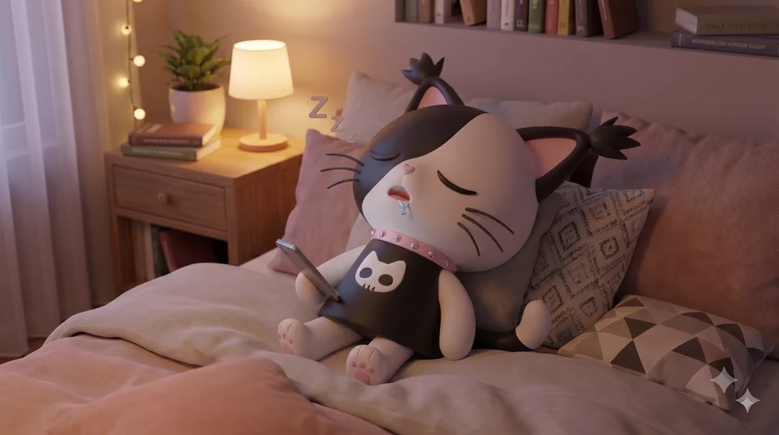
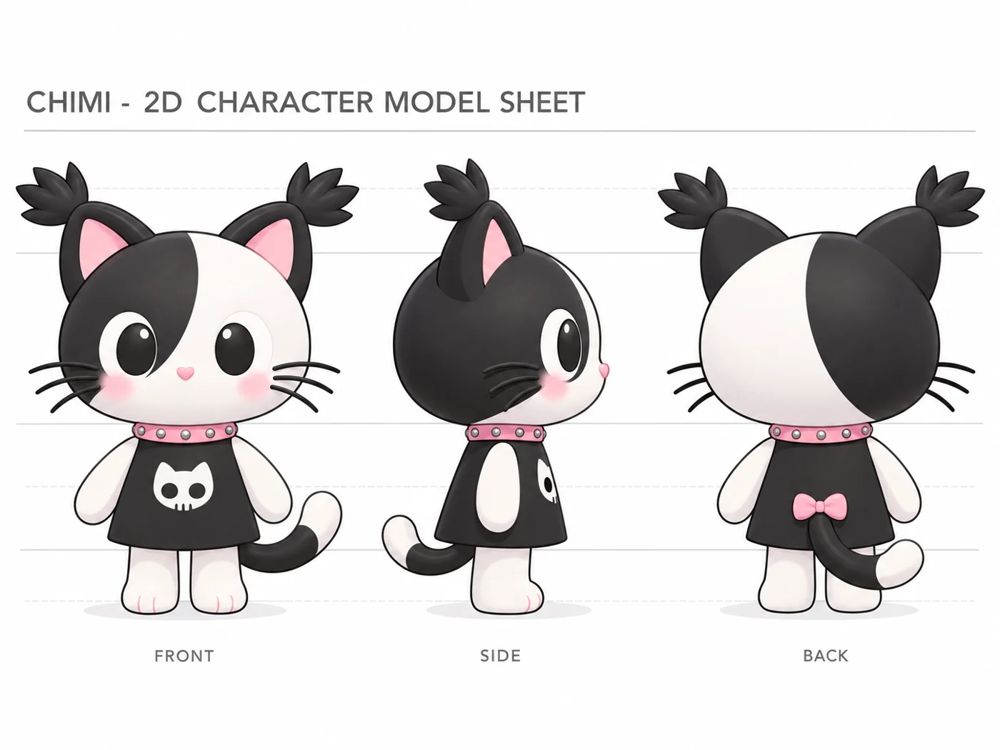
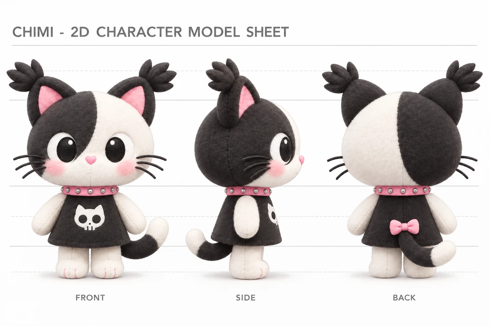
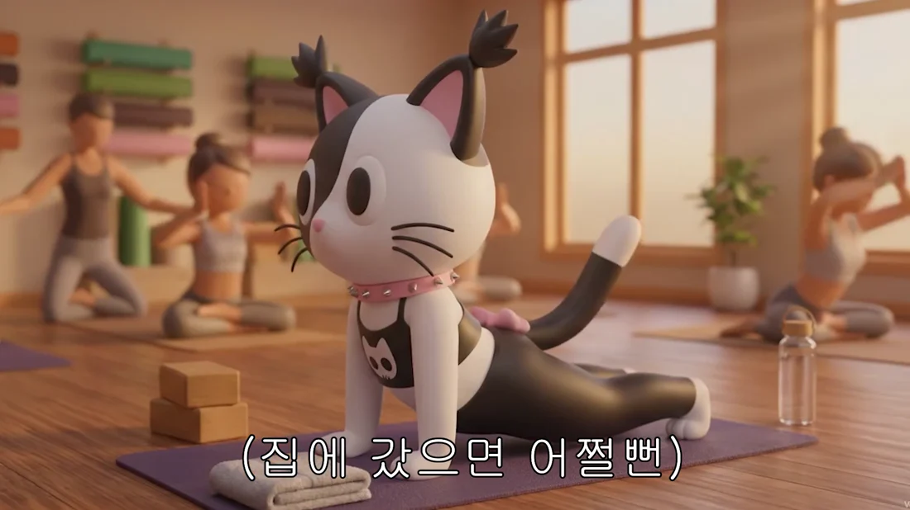
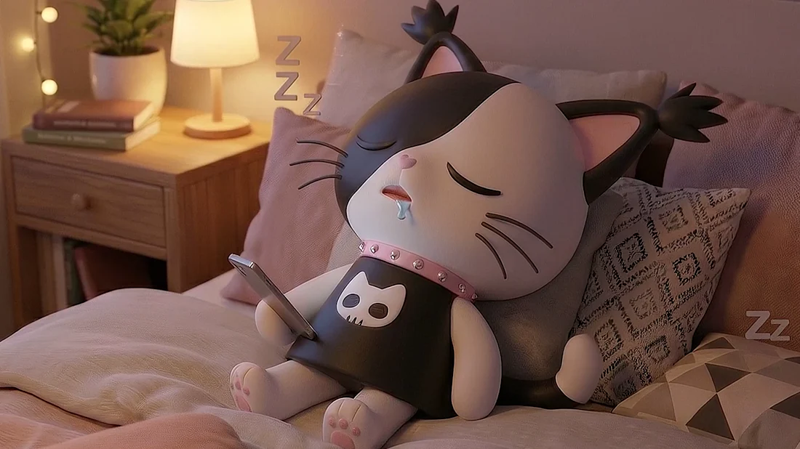

표정으로 망설임을 전하다
얼굴을 가까이 잡아 눈과 시선만으로 집에 갈지, 요가센터에 들어갈지 고민하는 마음을 보여줬습니다.
PROJECT 01 / ILLUSTRATION · CHARACTER
작고 귀여운 세계를 만드는 캐릭터 개발

OVERVIEW
캐릭터의 정면·측면·후면을 정리하고, 표정과 포즈의 일관성을 다듬는 개인 캐릭터 디자인 프로젝트입니다.


CHARACTER IN MOTION
치미를 주인공으로 하타요가 센터를 소개하는 3D 일상 코미디를 만들었습니다. 퇴근 후의 무기력, 운동을 시작하는 순간, 예상을 비껴가는 엔딩까지 치미의 표정과 움직임으로 풀었습니다.
얼굴을 가까이 잡아 눈과 시선만으로 집에 갈지, 요가센터에 들어갈지 고민하는 마음을 보여줬습니다.

영상에서도 검정·흰색 얼굴 무늬와 검은 원피스, 흰 끝 꼬리를 기준으로 삼았습니다. 요가 장면에서는 자세와 실루엣으로 캐릭터의 움직임을 읽히게 했습니다.

퇴근 직후의 침실을 엔딩에서 다시 보여줍니다. 여유가 생길 것 같던 저녁에 치미가 잠들어 버리는 결말로 일상 코미디를 완성했습니다.
PROCESS
캐릭터의 얼굴·머리·몸 비율을 정리하고, 시그니처 요소를 고정했습니다.
정면·측면·후면 삼면도와 기본 포즈를 구성했습니다.
다양한 표정과 응용 포즈를 제작하며 캐릭터성을 확장했습니다.